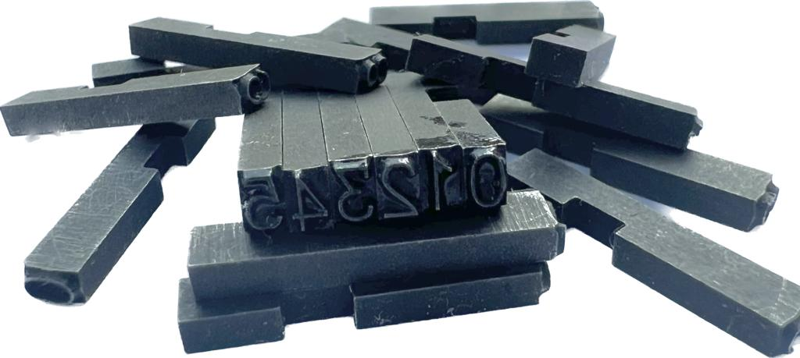
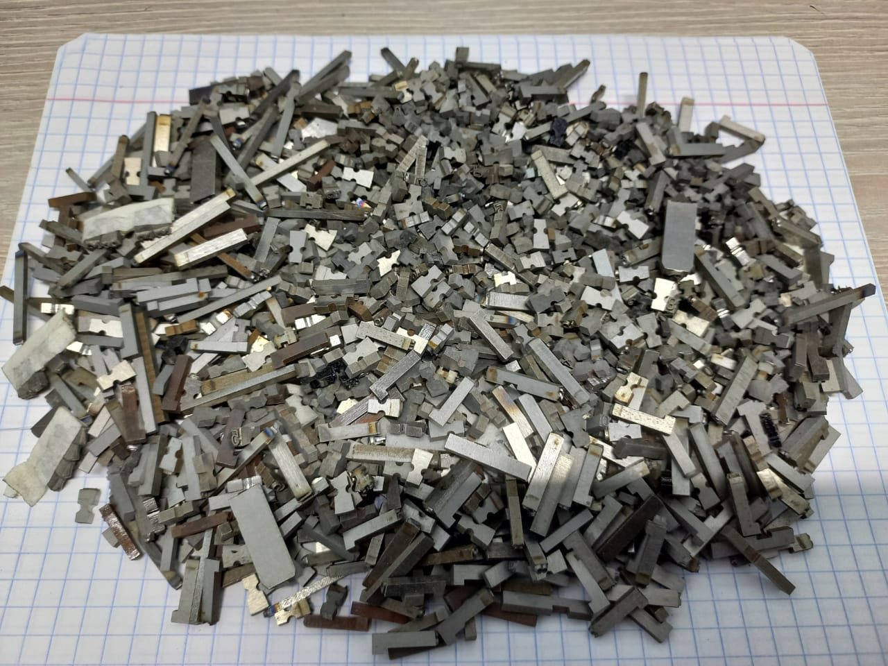
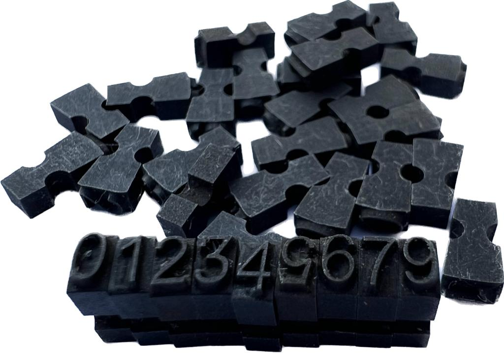

- Литеры + литеродержатели из легированной стали
- Средняя точность изготовления
0.02 - Приемлемое соотношение цена/качество от 2500 ₸ или 500 ₽ за 1 шт. Цена зависит от количества и размера литера
- Изготавливаем около 10 лет. В основном для медицины
- Для заказа нужен чертеж, либо образец или название маркиратора


